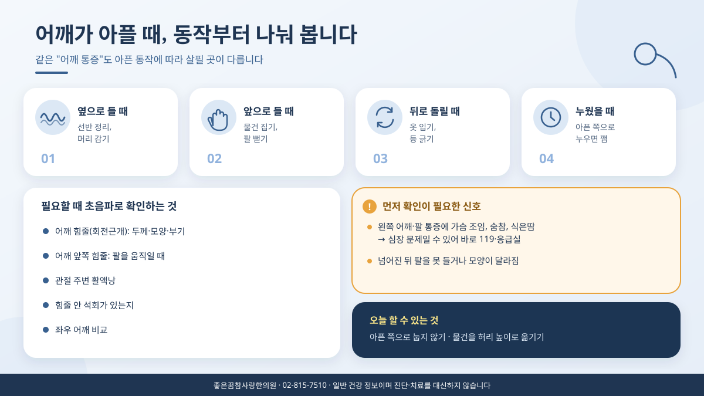
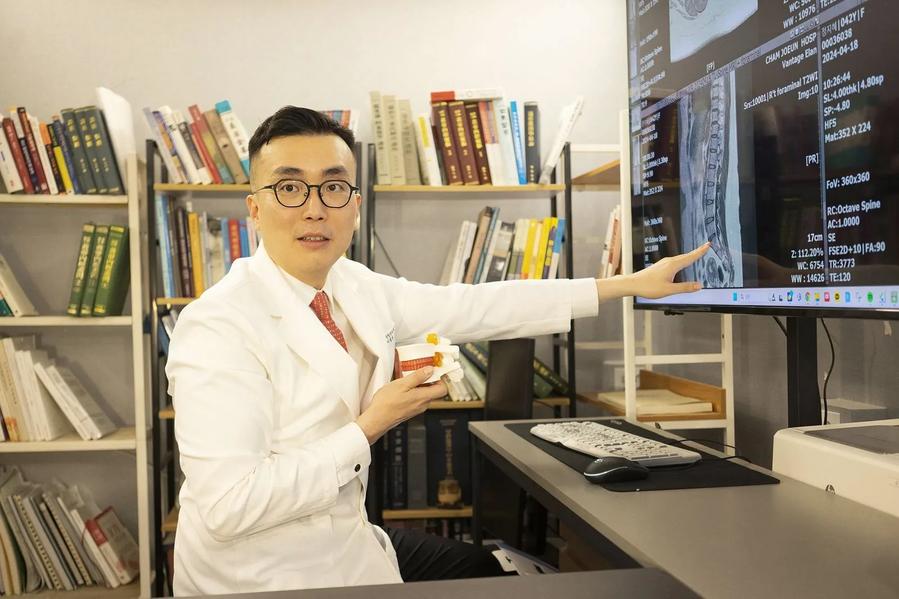
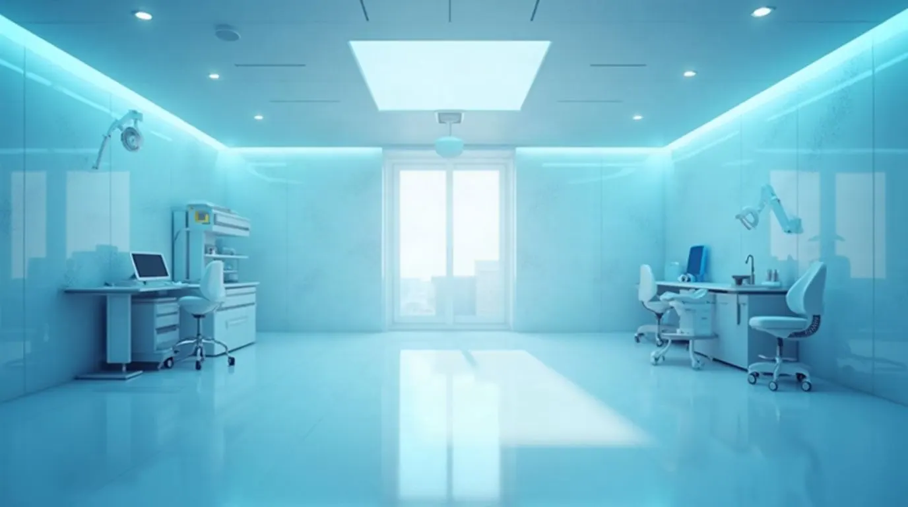

어깨 통증은 팔을 드는 동작, 뒤로 돌리는 동작, 누웠을 때의 통증을 먼저 여쭙니다. 필요하다고 판단될 때 초음파로 힘줄과 주변 조직을 보고, 초음파만으로 알기 어려운 부분은 다른 검사를 안내합니다.

아침에 셔츠를 입다가 팔이 소매에 잘 들어가지 않아 멈칫합니다. 머리를 감으려고 팔을 들면 어깨 앞쪽이 찌릿하고, 등 뒤로 손을 돌려 속옷 호크를 채우는 일이 어느새 큰일이 됐습니다. 출근길 버스에서는 손잡이를 아픈 쪽 팔로 잡지 못하고, 밤에는 아픈 쪽으로 돌아눕다가 깜짝 놀라 깹니다. 다시 잠들려고 베개를 몇 번이나 고쳐 베어 보지만 편한 자세가 잘 찾아지지 않습니다.
진료실에서 이런 말씀을 자주 듣습니다. "원장님, 이거 오십견인가요?" "팔을 이만큼만 올려도 아파요." 어깨가 아프면 하루의 거의 모든 동작이 신경 쓰입니다. 옷 입기, 머리 감기, 선반에서 그릇 꺼내기, 운전대 돌리기까지요. 하나하나는 작은 일인데 하루에도 수십 번 찾아오니, 얼마나 고단하실지 짐작이 갑니다. 밤잠까지 설치는 날이 이어지면 몸보다 마음이 먼저 지치기도 하지요.
어깨는 움직임이 아주 많은 관절이라, 같은 "어깨가 아프다"라도 아픈 동작에 따라 살펴볼 곳이 달라집니다. 어느 동작에서, 언제 아픈지를 알면 진료가 훨씬 구체적이 됩니다. 저는 이야기를 먼저 듣고, 눈으로 확인할 필요가 있을 때 초음파 화면을 함께 보며 설명합니다. 다만 왼쪽 어깨나 팔이 아프면서 가슴이 조이고 식은땀이 난다면 어깨가 아니라 심장 문제일 수 있으니, 이 글을 읽기보다 가까운 응급실에 먼저 가셔야 합니다.
어깨가 아파지는 데에는 이런 사정이 있습니다
어깨를 감싸는 힘줄을 흔히 회전근개라고 부릅니다. 선반 정리, 머리 감기, 운동처럼 팔을 머리 위로 드는 일을 반복하면 이 힘줄에 부담이 쌓일 수 있습니다. 나이가 들면서 힘줄이 조금씩 얇아지거나 닳으면, 예전 같으면 아무렇지 않았을 작은 부담에도 아플 수 있지요.
관절을 감싼 막이 뻣뻣해지면 팔이 끝까지 올라가지 않고 밤에 더 아픈 경우가 있습니다. 흔히 어깨가 굳어 간다고 표현하는 상태입니다. 자세도 영향을 줍니다. 등이 굽고 고개가 앞으로 나온 자세가 오래 이어지면 어깨가 움직일 공간이 좁아질 수 있습니다. 그리고 드물지 않게, 힘줄 안에 석회가 생겨 특별한 계기 없이 갑자기 심하게 아픈 경우도 있습니다.
당뇨가 있는 분들은 어깨가 굳는 경우가 더 흔하다고 알려져 있어, 저는 어깨 이야기를 들으면서 지병과 복용 중인 약도 꼭 여쭙습니다.
이 가운데 어느 한 가지만 있는 분도 있고, 두세 가지가 겹친 분도 있습니다. 그래서 저는 어깨 하나만 보고 이름을 붙이기보다, 그 어깨가 하루를 어떻게 지나왔는지부터 듣고 싶습니다.

어느 동작에서 아픈지 먼저 여쭙습니다
진료실에서 제가 가장 먼저 여쭙는 것은 동작입니다. 팔을 옆으로 들 때와 앞으로 들 때 중 언제 더 아픈지. 옷을 입거나 등을 긁을 때, 속옷 호크를 잠글 때처럼 팔을 뒤로 돌리는 동작이 불편한지. 누웠을 때, 특히 아픈 쪽으로 누울 때 밤에 깨는지. 어깨를 움직일 때 걸리는 느낌이나 소리가 나는지. 그리고 언제부터, 무거운 것을 든 뒤인지 운동 뒤인지 아니면 특별한 계기 없이 시작됐는지도 여쭙습니다.
이렇게 동작을 나눠 보면 살펴볼 방향이 좁혀집니다. 팔을 옆으로 들어 올리다 중간 높이에서 아프고 그보다 더 올리면 오히려 덜하다면, 어깨 힘줄이 눌리는 쪽을 생각해 볼 수 있습니다. 남이 들어 올려 줘도 팔이 끝까지 올라가지 않고, 뒤로 돌리기와 바깥으로 돌리기가 함께 막힌다면 관절을 감싼 막이 굳어 가는 경우를 생각해 봅니다.
스스로는 팔을 들기 어려운데 남이 들어 주면 올라가거나, 들어 올린 팔을 버티지 못하고 떨어뜨린다면 이야기가 조금 달라집니다. 힘줄 손상을 확인할 필요가 있어 영상 검사를 상의합니다. 특별한 계기 없이 갑자기 심하게 아파 팔을 거의 움직이지 못한다면 석회가 원인일 때도 있어, 초음파로 살펴보고 필요하면 X선 검사를 안내합니다. 고개를 돌리거나 숙일 때 어깨에서 팔로 저림이 퍼진다면 어깨보다 목에서 시작된 불편일 수 있으니 목을 함께 살핍니다.
초음파로 확인하는 것
필요하다고 판단될 때 저는 어깨를 감싸는 힘줄의 두께와 모양, 주변의 부기를 초음파로 봅니다. 어깨 앞쪽 힘줄이 팔을 움직일 때 어떻게 움직이는지, 관절 주변 활액낭에 염증이 의심되는 부위가 있는지도 살핍니다. 힘줄 안에 석회가 있으면 화면에서 하얗게 보이는 부위로 나타나기도 합니다. 다만 석회의 크기가 곧 통증의 크기는 아닙니다. 석회가 있어도 별로 아프지 않은 분이 있고, 작아 보여도 많이 아픈 분이 있어서 저는 화면과 함께 지금의 움직임을 꼭 같이 봅니다.
팔을 드는 동안의 모습을 실시간으로 확인할 수 있는 경우가 있다는 점도 초음파의 장점입니다. 아픈 동작을 천천히 해 보시도록 하고, 그때 힘줄과 주변 조직이 어떻게 움직이는지 함께 봅니다. 아픈 쪽과 반대쪽 어깨를 나란히 비교하면 환자분께 설명하기도 훨씬 쉽습니다. 볼 부위가 쉽게 드러나는 옷을 입고 오시면 좋고, 어깨에 파스를 붙이셨다면 미리 떼어 두세요.

초음파만으로 알기 어려운 것
초음파가 어깨의 모든 것을 보여 주지는 않습니다. 뼈 속 상태와 미세한 골절, 관절 깊은 곳의 구조와 관절 안쪽의 연골은 초음파로 보기 어렵습니다.
어깨가 굳어 가는 정도도 마찬가지입니다. 흔히 오십견이라고 부르는 상태는 화면 한 장으로 판단하기보다 팔이 움직이는 범위와 진찰을 함께 봐야 합니다. 이런 부분이 의심되면 X선이나 MRI 같은 다른 검사를 안내합니다. 영상에서 뚜렷하게 보이지 않는다고 괜찮다는 뜻은 아니라는 점도 함께 말씀드립니다. 화면이 깨끗해도 아플 수 있으니까요.
이런 분들을 자주 뵙습니다
하루 종일 컴퓨터 앞에서 일하는 직장인이 오후마다 어깨 앞쪽이 묵직하고 팔을 들 때 걸린다며 오시는 경우가 많습니다. 이런 분께는 모니터를 눈높이에 맞추고, 한 시간마다 어깨를 뒤로 천천히 돌려 풀어 주자고 말씀드립니다. 굽은 자세가 함께 있다면 진료에서 목과 등의 움직임도 같이 봅니다.
김장이나 대청소처럼 팔을 많이 쓴 다음 날부터 머리 감기와 옷 입기가 불편해졌다는 분들도 자주 뵙습니다. 며칠은 팔을 머리 위로 드는 일을 줄이고, 어느 동작이 가장 불편한지 적어 두시라고 부탁드립니다. 그 메모 한 줄이 진료실에서 살펴볼 곳을 알려 줍니다.
어르신 가운데는 몇 달에 걸쳐 팔이 조금씩 덜 올라가고, 밤에 아픈 쪽으로 눕지 못하신다는 분이 많습니다. 서서히 오다 보니 언제부터 그랬는지 기억이 잘 나지 않는다고 하십니다. 이럴 때는 거울 앞에서 양팔을 함께 들어 올라가는 높이를 비교해 보고, 날짜와 함께 적어 두시면 진료 때 변화를 보기 쉽습니다.
아이를 안아 재우느라 한쪽 팔로 오래 버티는 부모님들도 자주 오십니다. 늘 안던 쪽 어깨가 먼저 아프기 시작했다고 하시지요. 이럴 때는 안는 팔을 일부러 번갈아 바꾸고, 앉아서 안을 때는 팔꿈치 아래에 쿠션을 받쳐 팔이 혼자 무게를 버티지 않게 해 보자고 말씀드립니다.
운동을 좋아하는 분들은 쉬라는 말을 가장 힘들어하십니다. 헬스장에서 어깨 운동을 한 뒤 앞쪽이 아프다고 오시는 경우, 저는 운동을 통째로 멈추기보다 통증이 심해지는 동작만 잠시 빼고 아프지 않은 범위의 움직임은 이어 가자고 말씀드립니다. 어느 범위까지 괜찮은지는 진찰 뒤 함께 정합니다.

집에서 먼저 해 볼 것
밤에는 아픈 쪽으로 눕지 마시고, 바로 누울 때 아픈 팔 아래에 작은 베개를 받쳐 보세요. 팔이 살짝 떠 있으면 어깨가 덜 눌립니다. 자주 쓰는 물건은 선반 위에서 허리 높이로 옮겨 팔을 드는 횟수를 줄입니다. 장바구니나 무거운 가방은 당분간 아프지 않은 쪽 팔이나 양손으로 나눠 드시고요.
통증이 없는 범위에서 팔을 늘어뜨려 시계추처럼 가볍게 흔들어 보세요. 컴퓨터 작업 중에는 한 시간마다 어깨를 뒤로 천천히 돌려 풀어 줍니다. 뻐근하고 굳은 느낌일 때는 따뜻한 샤워로 어깨를 데운 뒤, 통증 없는 범위에서 팔을 앞으로 천천히 올렸다 내려 봅니다. 아픈데 억지로 끝까지 올리려고 하지는 마세요. 추운 날 어깨를 잔뜩 움츠리고 다니면 더 뻣뻣해진다는 분이 많으니, 겨울에는 목도리나 얇은 겉옷으로 어깨를 감싸 따뜻하게 지켜 주세요.
스스로 한번 점검해 보셔도 좋겠습니다. 팔을 옆으로 들 때 중간 높이에서 아픈지. 등 뒤로 손을 돌려 올리기가 한쪽만 어려운지. 아픈 쪽으로 누우면 아파서 잠을 깨는지. 남이 들어 줘도 팔이 끝까지 올라가지 않는지. 들어 올린 팔을 버티기 어렵고 힘이 빠지는지. 고개를 돌리거나 숙이면 팔까지 저림이 내려가는지. 이 가운데 팔에 힘이 빠지거나 저림이 팔로 내려간다면 지켜보기보다 먼저 진료를 받아 확인하세요.
얼마나 지켜보고, 언제 진료를 받을까요
팔을 많이 쓴 뒤 생긴 뻐근함은 머리 위로 드는 동작을 줄이면서 며칠에서 1~2주 지켜볼 수 있습니다. 2~3주가 지나도 같은 동작에서 아프거나 팔이 올라가는 높이가 점점 줄어든다면 진료를 받아 확인해 보세요. 밤마다 아파서 깨는 날이 이어진다면 기다리지 마시고요.
다음과 같은 경우에는 먼저 병원에서 확인이 필요합니다.
- 왼쪽 어깨나 팔이 아프면서 가슴이 조이거나 숨이 차고 식은땀이 나는 경우: 심장 문제일 수 있어 가까운 응급실에서 바로 확인을 받으세요.
- 넘어지거나 부딪힌 뒤 팔을 들 수 없거나 어깨 모양이 달라진 경우
- 갑자기 팔에 힘이 빠지는 경우
- 어깨가 붉고 뜨거우며 열이 나는 경우
- 쉬어도 밤새 심하게 아픈 경우
복용 중인 진통제나 다른 약은 처방한 의사와 상의 없이 줄이거나 끊지 않습니다.

좋은꿈참사랑한의원에 처음 오시면
처음 오시면 저는 불편한 동작과 통증 부위, 시작된 계기부터 여쭙니다. 밤에 몇 번쯤 깨는지, 주로 어느 쪽으로 누워 주무시는지, 어깨를 많이 쓰는 일이나 운동을 하시는지도 함께 듣습니다.
그다음 양손을 올려 봐 달라고 말씀드립니다. 맥은 모든 분께 짚습니다. 어깨가 아파 오셨는데 손목부터 짚으니 의아하실 수 있지요. 같은 통증이라도 몸이 지쳐 있는지, 잠이 부족한지에 따라 치료의 세기와 순서가 달라질 수 있어서입니다. 이어서 팔을 앞·옆·뒤로 움직이는 범위와 힘, 목과 등의 움직임을 살핀 뒤, 필요하다고 판단될 때 초음파 화면을 보며 쉬운 말로 설명합니다. 어깨가 아프다고 모든 분께 초음파를 하지는 않습니다.
그렇게 살핀 것을 모아 침, 약침, 추나, 체외충격파 가운데 상태에 맞는 방법을 정합니다. 진료실을 나서기 전에는 당분간 피할 동작과 집에서 해 볼 움직임을 알려 드립니다. 같은 동작으로 달라진 점을 기록해 두었다가, 다음 진료에서 이어서 여쭙습니다.
오실 때는 가장 아픈 동작(옷 입기, 머리 감기, 등 뒤로 손 돌리기)과 통증 정도, 밤에 깬 횟수와 주로 눕는 방향, 이전에 받은 X선·MRI 결과지와 주사 치료 이력, 어깨를 많이 쓰는 일이나 운동의 종류와 시간을 메모해 오시면 좋습니다.
마치며
어깨가 아프면 남들은 잘 모르는 불편이 하루에도 수십 번 찾아옵니다. 옷 하나 입는 데도 요령이 필요해지고, 밤에는 돌아눕기가 겁납니다. 그런 하루를 보내면서도 일과 집안일을 놓지 못하셨을 테니, 그동안 참 애쓰셨습니다. 어깨가 아픈 이유는 한 가지가 아닌 경우가 많습니다. 어느 동작에서 아픈지 하나씩 나눠 보면 살펴볼 곳이 보이기 시작합니다.
오늘 밤 거울 앞에서 양팔을 한번 들어 보세요. 어느 쪽이 어디까지 올라가는지만 기억해 두시면 됩니다. 다음에 오시면 이번 주에 팔이 어디까지 올라갔는지, 밤에 몇 번 깨셨는지부터 여쭙겠습니다.

함께 읽으면 좋은 글
- 관절이 아플 때 초음파로 무엇을 확인하고, 무엇은 확인하기 어려운가요?
- 오십견이 의심될 때 어깨가 어느 방향으로 안 올라가는지 먼저 살펴보려면 어떻게 하나요?
- 한의원에서 초음파 진단을 받을 때는 어떤 순서로 진행되나요?
자주 묻는 질문
어깨가 아프면 모두 초음파를 하나요?
아니요. 말씀해 주신 증상과 진찰을 바탕으로 필요하다고 판단될 때만 합니다.
초음파로 오십견을 알 수 있나요?
흔히 오십견이라고 부르는 굳어 가는 상태는 초음파만으로 판단하기보다 움직임의 범위와 진찰을 함께 봐야 합니다. 필요하면 다른 검사를 안내합니다.
초음파에서 이상이 안 보이면 괜찮은 건가요?
아니요. 영상에서 뚜렷하게 보이지 않아도 통증은 있을 수 있어 진찰과 환자분의 이야기를 함께 봅니다.
어깨 통증과 함께 가슴이 답답하면 어떻게 하나요?
왼쪽 어깨나 팔의 통증과 함께 가슴 조임, 숨 참, 식은땀이 있으면 기다리지 말고 가까운 응급실에서 바로 확인을 받으세요.
어깨가 아플 때 운동은 쉬어야 하나요?
통증이 심해지는 동작은 잠시 줄이되 아프지 않은 범위의 움직임은 이어 가는 편을 권합니다. 어느 범위까지 괜찮은지는 진찰 뒤 함께 정합니다.
이 글은 일반적인 건강 정보이며 개인의 진단이나 치료를 대신하지 않습니다. 증상이 있거나 복용 중인 약이 있다면 진료를 통해 확인하세요. 치료 효과는 개인마다 다를 수 있습니다.
작성 기준: 일반적으로 알려져 있는 건강 정보를 참고해 정리했습니다(대표원장 감수). 증상 기록은 1~2주 동안 하루 1회, 비슷한 시간에 적어 오시면 지난 상태와 비교하기 쉽습니다.
좋은꿈참사랑한의원은 재진 때 지난번 이야기부터 이어서 여쭙니다. 진료시간과 예약은 오시는 길에서 확인하세요.
어디서 상담받을 수 있나요?
좋은꿈참사랑한의원은 서울 동작구 만양로2길 2 신성빌딩 3층·5층(서울 동작구 상도동, 7호선 상도역 3번 출구 근처)에 있습니다. 한의사 3명(이종호 대표원장, 조영기 수석진료원장, 정원영 진료원장)이 진료합니다. 진료시간은 평일 09:30~20:00(점심 13:00~14:00), 토·일·공휴일 09:30~15:00이며, 방문 전 전화로 확인을 권합니다. 예약은 네이버 예약, 카카오톡 상담, 전화 02-815-7510로 받습니다.